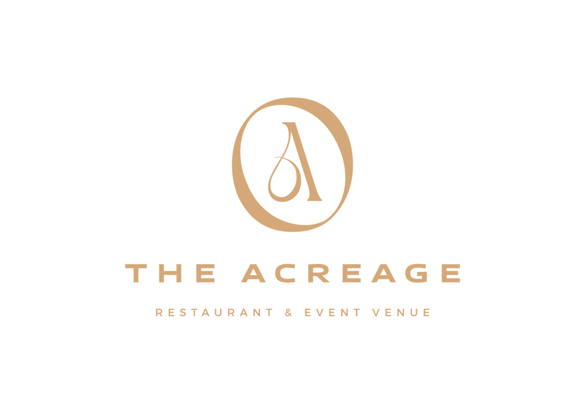
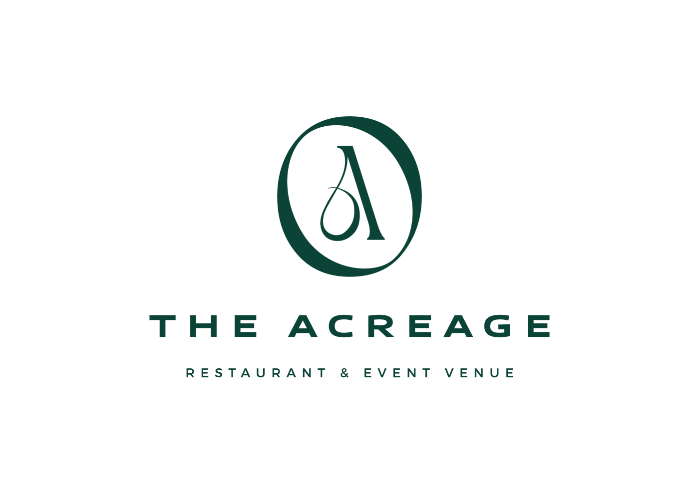
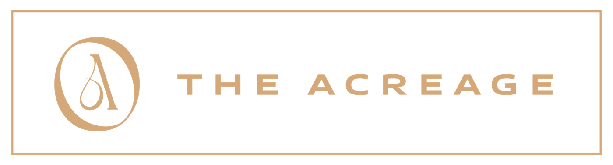
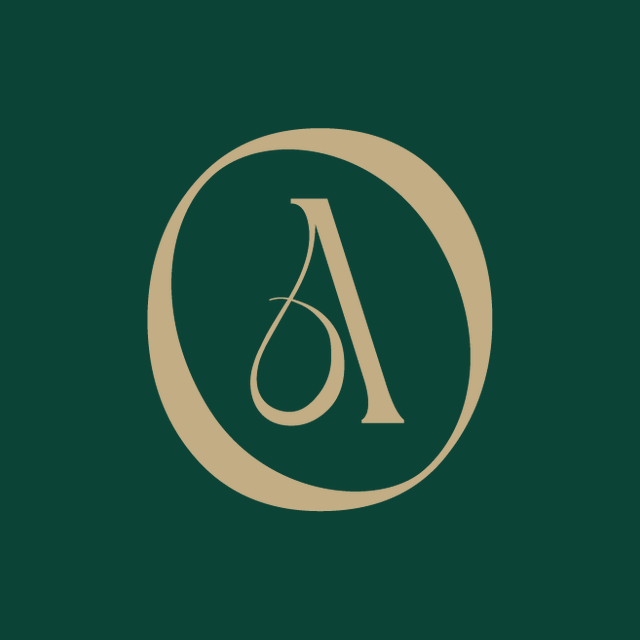
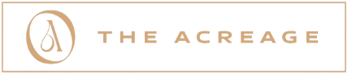
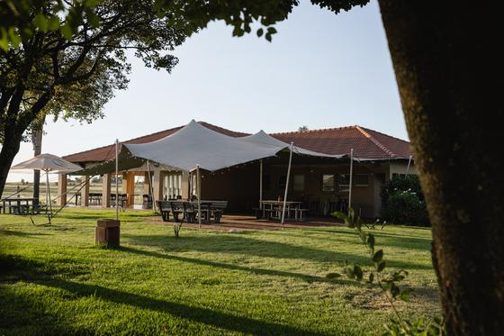

What this is
One place to look up the logo, the colours, the type and the photography, so everything The Acreage puts out looks like the same business.
It is built from the brand files in The Acreage's own Dropbox: the vector logo, the colour sheet, the visual reference guide and the nineteen social media templates. Where those files disagree with each other, or with what is on Facebook, this document says so rather than quietly picking one.
A few things are still being decided, mainly the script font and the exact green. Those are marked as open at the end, and this page gets updated as they are settled, so treat it as living rather than final.
The logo
Five marks exist, and each has its place. The stacked version is the primary one. The horizontal version is for anywhere wide and short. The monogram alone is for profile pictures and small spaces. The framed lockup is a stamp for photographs and printed pieces.






Clear space and smallest size
- Clear space. Keep a margin all round equal to the height of the capital A in THE ACREAGE. Nothing sits inside it: no text, no edge, no other logo.
- Smallest sizes. Stacked logo 22mm wide in print or 150px on screen. Horizontal 30mm or 200px. Monogram 12mm or 48px.
- On photographs, place the mark in the quietest corner, or lay a soft dark gradient behind it. Never over a face or a plate.
- One mark per layout. If the venue name is already in the headline, the logo goes small in a corner rather than twice in the frame.
What not to do
Two more, both common: the JPEG version carries a white box around the mark, so it cannot go on a coloured background, and the logo should never be rebuilt by typing the name in another font.
Colour
Four colours carry the brand. Green is the ground, gold is the accent, and white and black do the work in between. The values below are sampled from the logo files themselves, so they are exact.
#0B4337 · 11, 67, 55The ground colour. Backgrounds, panels, and the restaurant's own dark green interior.#D4A878 · 212, 168, 120The accent. The mark, hairlines, small caps labels, prices. Never a whole background.#F8F3EA · 248, 243, 234Light layouts, menus and documents. Softer on screen than pure white.#000000 · 0, 0, 0Type on white, and the black logo for print where green is not available.The logo files use #0B4337. The nineteen social media templates use #014236. Side by side the difference is invisible, but it means the files drift apart over time and print will show it. Pick one. My recommendation is the logo's #0B4337, because the logo is the file nobody will re-export.
What reads, and what does not
Measured contrast, against the 4.5 to 1 that ordinary text needs to stay legible. This is why gold headlines on white always look weak.
| Combination | Contrast | Ordinary text | Use it for |
|---|---|---|---|
| White on Estate Green | 11.2 : 1 | Passes | The safest pairing. Body text on green panels. |
| Estate Green on Warm White | 10.2 : 1 | Passes | Menus, documents, the website. |
| Gold on Black | 9.7 : 1 | Passes | Print, signage, dark photography. |
| Gold on Estate Green | 5.2 : 1 | Passes | The signature pairing. Good for headlines and labels; keep long paragraphs white. |
| Gold on White | 2.2 : 1 | Fails | Decoration only: rules, borders, one large number. Never small text. |
Typography
Body copy is Montserrat Light or Regular at a comfortable size, with generous line spacing and short lines. It should feel calm and unhurried, in keeping with the place, and it should never fill the whole frame.
How it is set
- Montserrat does the work: headings in SemiBold uppercase, body in Light or Regular.
- The script is an accent, one phrase per layout, never a paragraph and never a price.
- Letterspacing on anything uppercase. It is what makes the type read as considered rather than loud.
- Left aligned as a rule. Centre only short lines, such as an invitation.
What is in the brand folder
- Montserrat, with its open licence included. Free for commercial use and safe to keep.
- Canyon, in eighteen weights, every file named "personal use only".
- Pinklatte, whose own readme says no commercial use is allowed.
Social posts, ads and menus are commercial use, so the free demo versions of Canyon and Pinklatte do not cover them. Both are inexpensive to license, which is the simplest fix if the look is already loved.
The alternative is to keep Montserrat for everything and license one elegant script for headline moments. Either way it is a small decision, and it should be made before the next batch of templates is built. The script line above is a stand-in until it is settled.
Photography
The brand lives or dies on the pictures. The house style, taken from The Acreage's own reference guide and the best of the existing library: natural light, warm and understated, uncluttered, and shot portrait or from overhead so it sits properly in a feed.
Yes
- Daylight, and the last hour of it. The lawns, the lake, the drive in.
- People mid-moment: eating, pouring, laughing, walking in.
- Food on the table in front of someone, with a hand in the frame.
- Space around the subject, so a headline has somewhere to sit.
- Dogs, children and a full room. They are the proof.
No
- Stock photographs. Four of the current templates use them, and it shows.
- Heavy or cold edits, strong filters, flash.
- Cluttered tables, bins, cables, stacked chairs.
- Anything saved from someone else's Instagram, especially in a paid advert.
- Shooting horizontal only. A wide frame cannot become a Story.



The full list of what we still need, with the formats drawn to scale, is at jcereports.netlify.app/clients/acreage/visuals/, and the brief for the Saturday shoot is at jcereports.netlify.app/clients/acreage/shoot-brief/.
Words
The voice
- Refined, warm, understated. Short sentences. No exclamation marks.
- Say the thing plainly: the dish, the price, the day, the time.
- Sparing with emoji, in keeping with the reference guide.
- Always a next step: a WhatsApp number or a link, never "DM us for info".
Fixed wording
- The Acreage, with the capital T, and not "Acreage Venue" in copy.
- Restaurant and Event Venue under the mark, as the logo has it.
- Where we are: twenty minutes from Sandton, or Midrand, rather than the racecourse name on its own.
- Spaces and numbers: 106 seated inside, 450 on the restaurant lawns, up to 3,000 across the estate.
How it comes together on social
Two shapes carry almost everything. Feed posts are 1080 by 1350 and Stories and Reels are 1080 by 1920. The existing templates are A4 shaped at 1414 by 2000, which is why they are being re-set rather than stretched.
- The monogram is the profile picture everywhere, and sits small in the corner of designed posts.
- Green panels for anything type-led: offers, menus, quotes, invitations. Photographs run edge to edge with no frame.
- One idea per post. A dish and a price, or a space and a headcount. Not both.
- On Stories, keep words clear of the top 250 and bottom 670 pixels, where the interface sits.
The files, and where they live
| What | File | Use it for |
|---|---|---|
| Logo, vector | The Acreage_LOGO_vector.pdf | Print, signage, anything large. The master file. |
| Stacked, transparent | The Acreage_LOGO_Main Colours.png, plus green, white and black | Screen and documents. |
| Horizontal | Logo_Horisontal_Gold / Green / White / Black.png | Headers, banners, email signatures. |
| Monogram | PNG LOGO.png, plus the WhatsApp icons | Profile pictures and small marks. |
| Colour and reference | The Acreage_BRAND COLOURS.pdf, Visual Reference Guide.pdf | The originals this page is built from. |
| Templates | Nineteen PNGs in Social Media Templates | Being re-set to feed and Story sizes. |
Everything belongs in one shared Google Drive folder, with photographs in their original quality. Files sent over WhatsApp are compressed on the way and cannot be used in print or in an advert.
Still open
- The green: #0B4337 from the logo, or #014236 from the templates. One of them, everywhere.
- The script font: license Canyon or Pinklatte, or choose a licensed alternative.
- The editable template files, so they can be re-set rather than rebuilt.
- Trading hours in writing: the templates say 7am to 3pm and Facebook says the kitchen closes at 15:30.
- A warm white as the fifth colour for light layouts, shown here as #F8F3EA and not yet in the brand sheet.
- A standalone monogram file, the A in its ring on its own, cut from the vector. The pack has no such file, so the WhatsApp icon was made by hand.
Download this reference as a PDF. The visuals we need: jcereports.netlify.app/clients/acreage/visuals/. Saturday shoot brief: jcereports.netlify.app/clients/acreage/shoot-brief/.